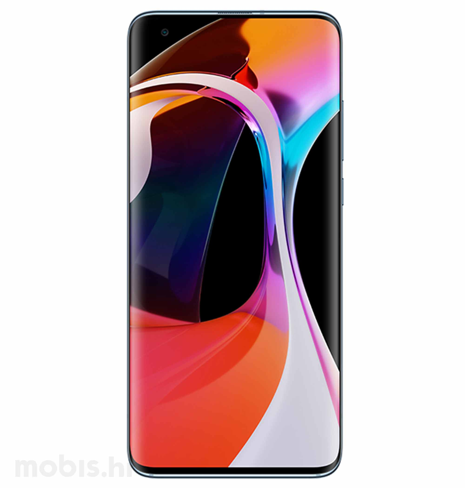

Xiaomi Mi 10 5G

Spesifikasi :
- Layar: Super AMOLED, 6.67 inches
- Chipset: Qualcomm SM8250 Snapdragon 865 (7 nm+)
- CPU: Octa-core (1×2.84 GHz Kryo 585 & 3×2.42 GHz Kryo 585 & 4×1.80 GHz Kryo 585)
- GPU: Adreno 650
- RAM: 8 GB, 12 GB
- Memori Internal: 128 GB, 256 GB
Mi 10 5G adalah versi yang lebih rendah dari Mi 10 Pro 5G. Perbedaan di antara keduanya terletak di empat sektor, yaitu memori, kamera belakang, baterai, dan opsi warna. Varian paling rendah dari Mi 10 5G menawarkan RAM 8 GB dan ROM 128 GB, sedangkan varian tertingginya adalah RAM 12 GB dan ROM 256 GB.
Pengaturan kameranya juga dibuat lebih rendah dari versi Pro-nya. Mi 10 5G tidak memiliki kamera telefoto yang bisa dikatakan sangat penting pada komposisi kamera ponsel kelas atas. Sebagai gantinya, Xiaomi menyematkan kamera makro untuk pemotretan close-up dan kamera kedalaman untuk efek bokeh.
Sementara itu, Mi 10 5G menawarkan kapasitas baterai yang sedikit lebih besar, namun hanya mendukung pengisian cepat 30W. Selebihnya parameter HP ini dibuat setara dengan saudaranya Mi 10 Pro 5G.
~BACK~